Objective
This project focuses on simplifying document and task management, making contract-related operations more organized and easier to monitor.
Project Detail • Web Application
A dedicated web solution for managing contracts, project coordination, and contractor-worker workflows in one place.
This project focuses on simplifying document and task management, making contract-related operations more organized and easier to monitor.
It helps teams stay aligned by reducing manual coordination and improving visibility across different project responsibilities.
React.js, ASP.NET Web API, SQL Server, and responsive UI design.
This page is dedicated to the Contract Management System project so each project is presented separately with its own details and visuals.
These visuals represent the different sections and interfaces used in the project workflow.
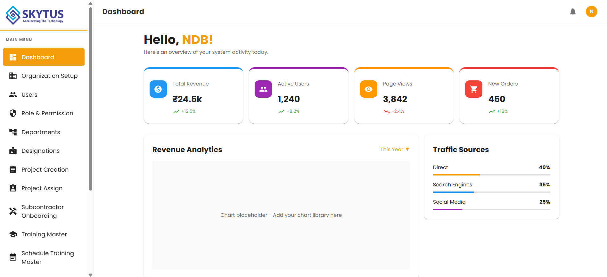
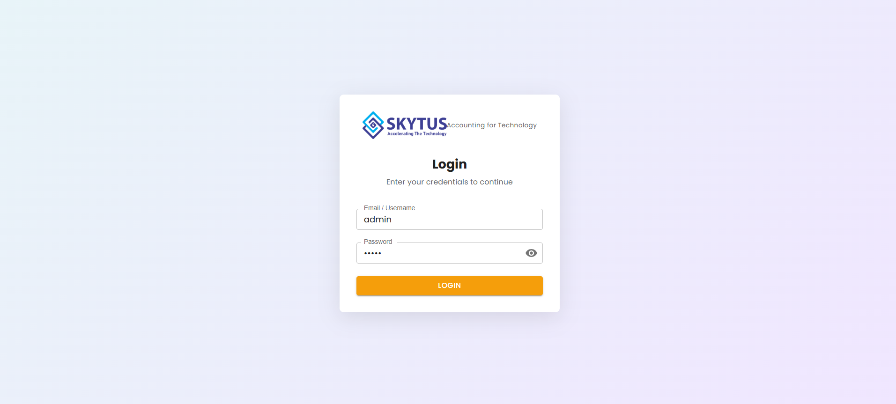
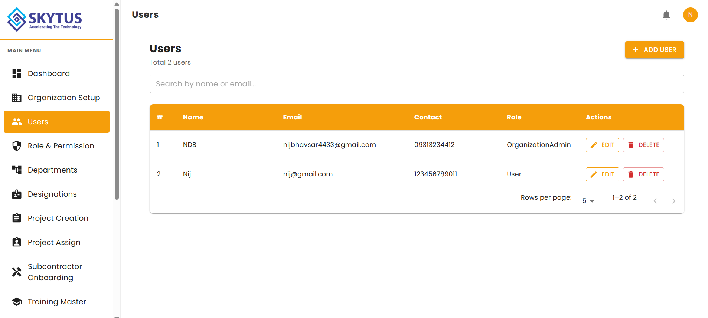
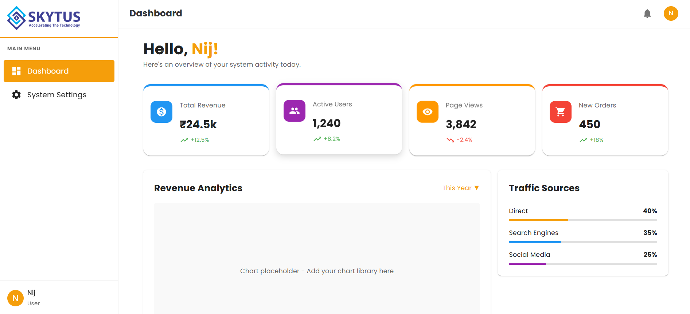
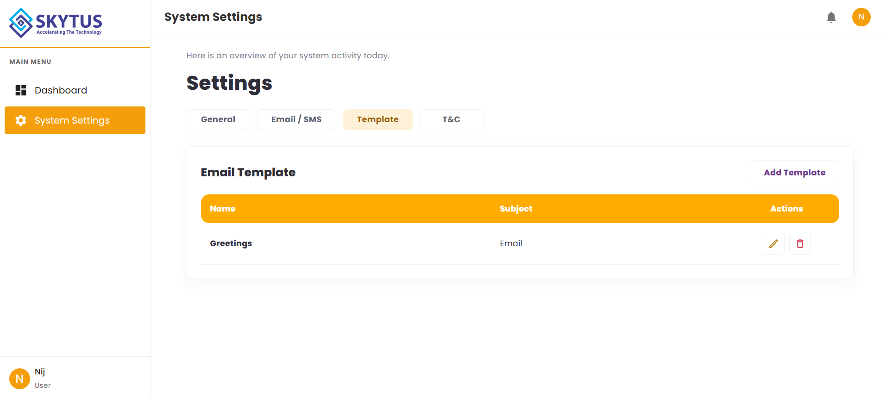
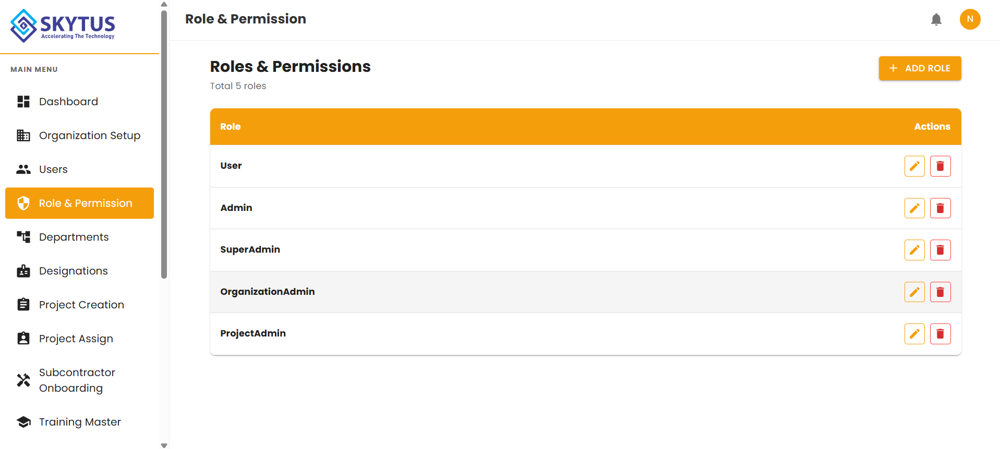
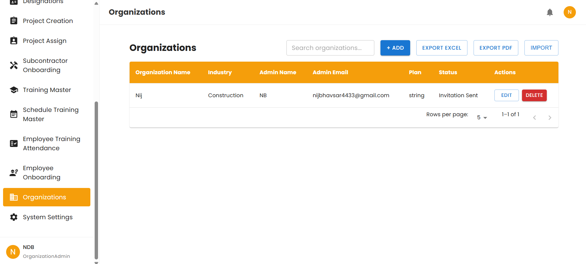
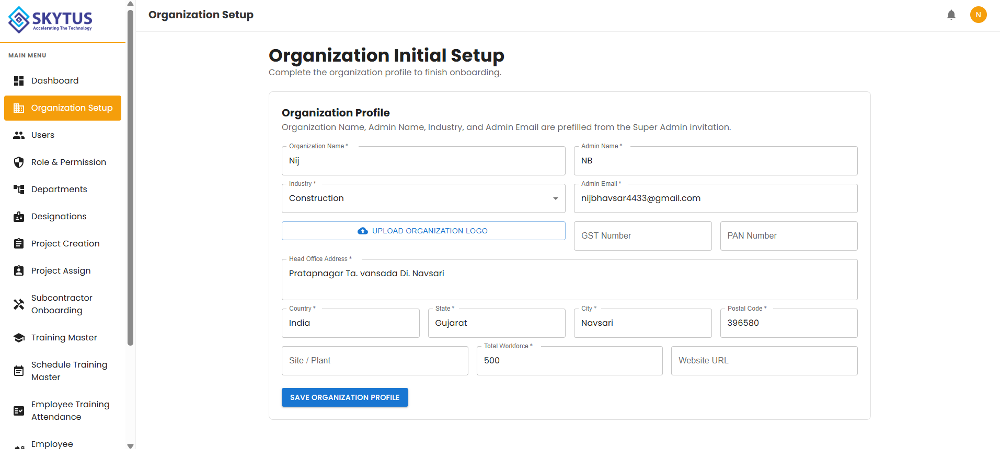
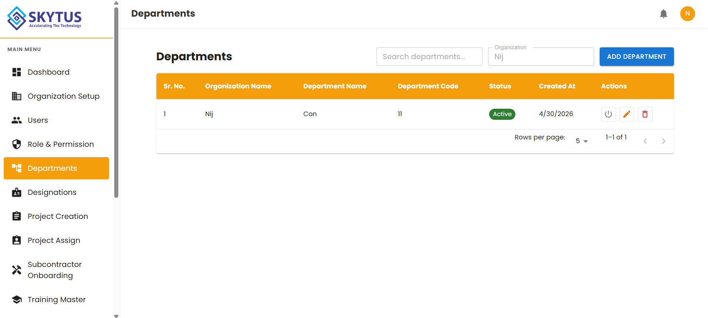
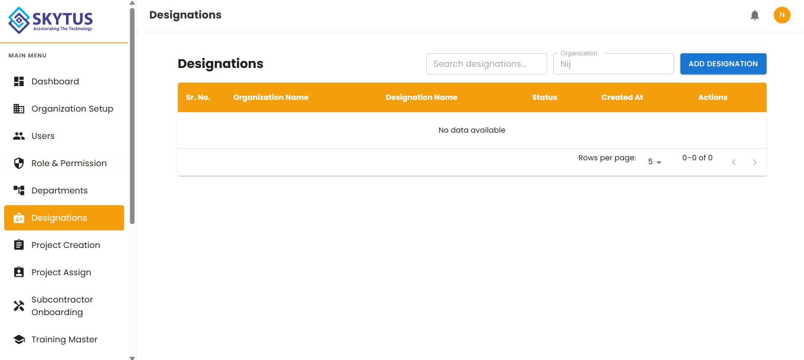
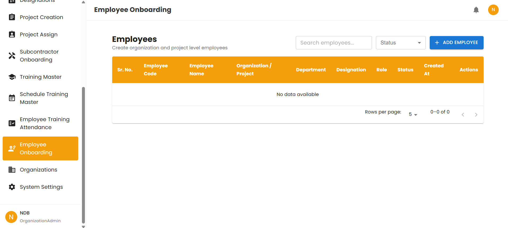
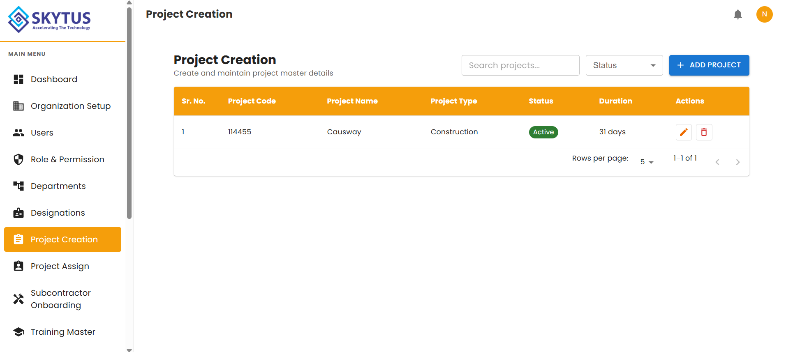
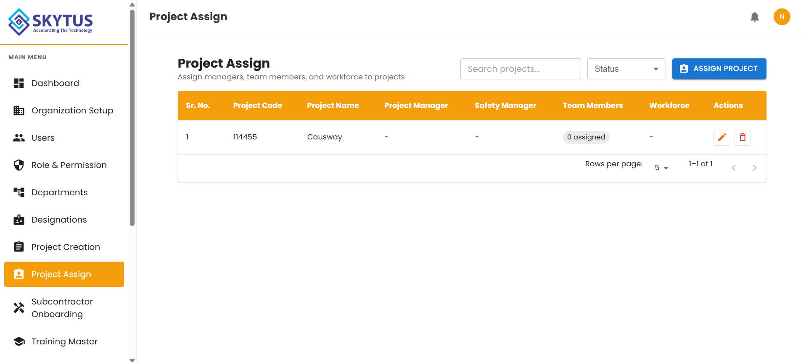
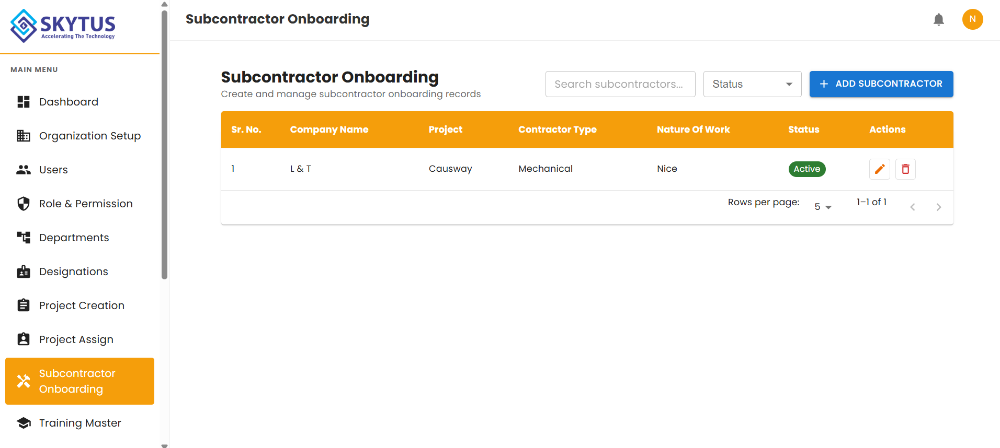
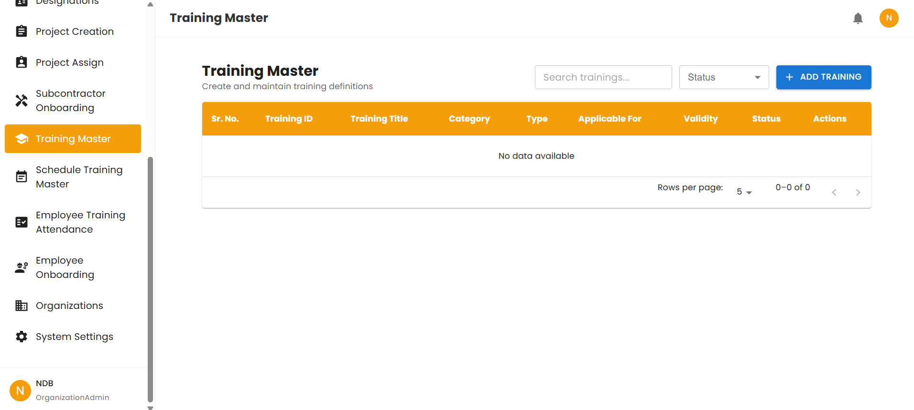
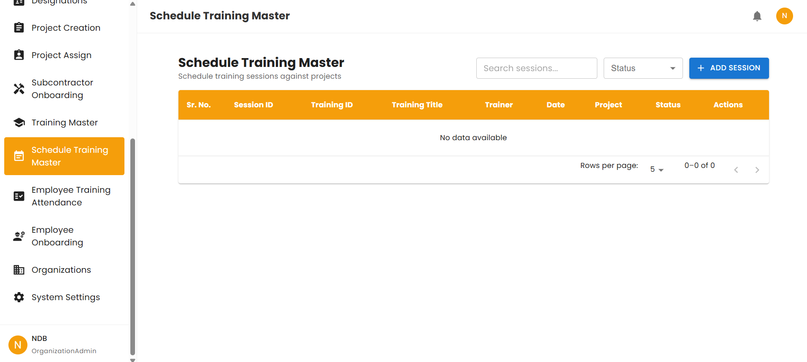
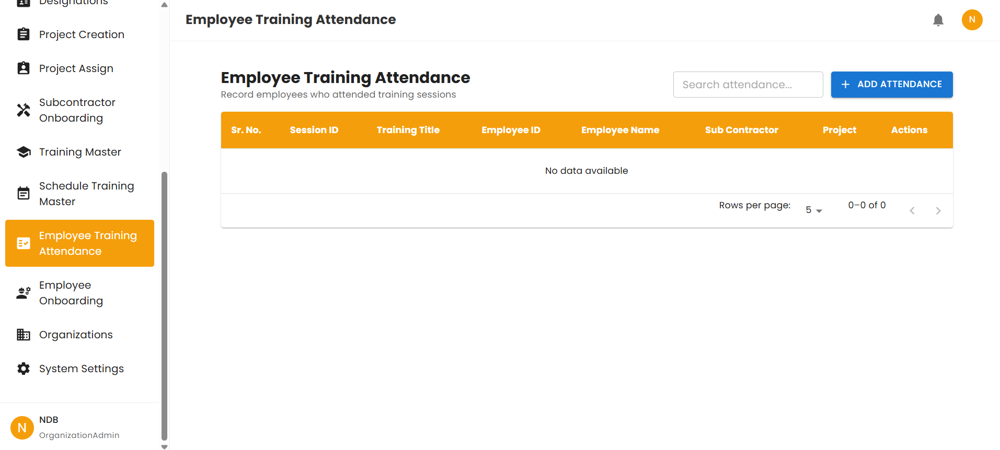
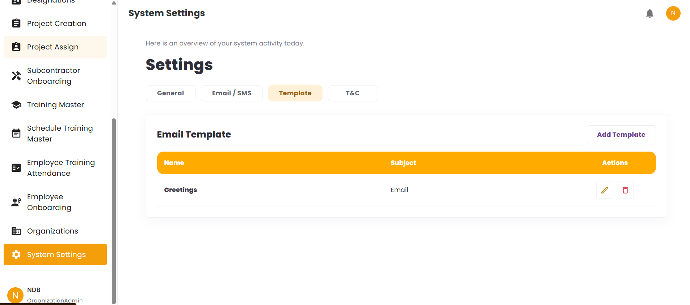